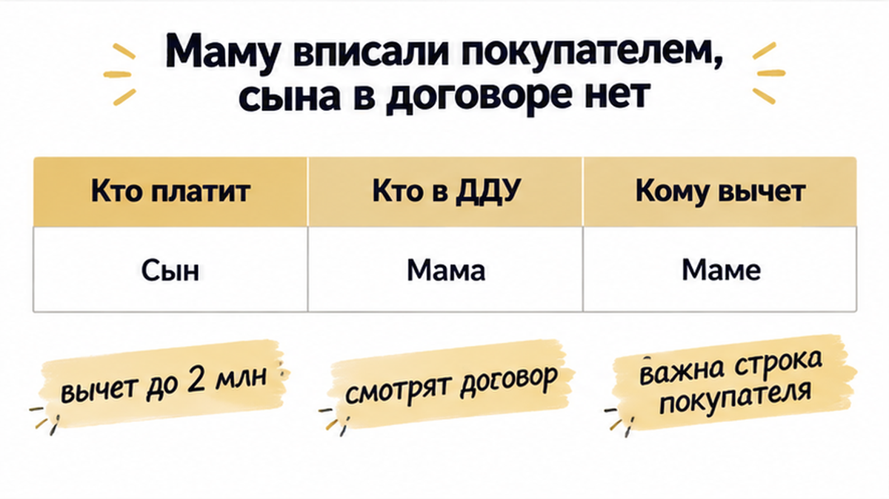
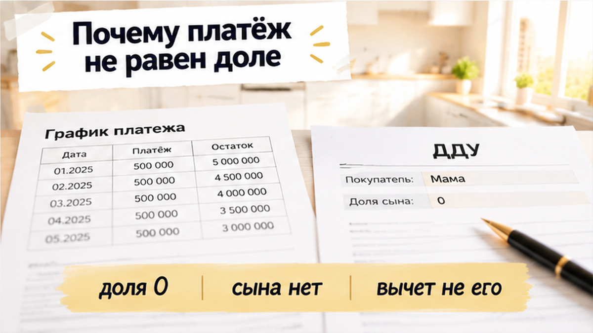
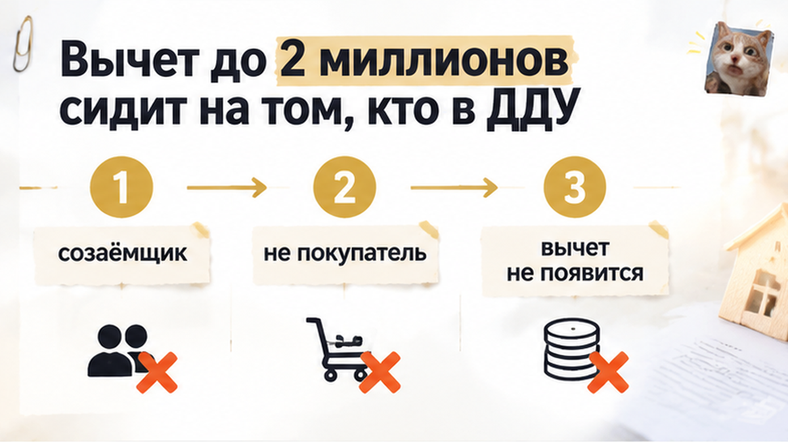

В Тюмени подпись под ДДУ остановилась на одной строке: сын собирался платить ипотеку за новостройку, а его доля в договоре была 0. В офисе застройщика лежал черновик договора долевого участия, и в графе «покупатель» стояла только мама. Сын сидел рядом, и платёж по кредиту по плану ложился на него, каждый месяц. В строке покупателя его не было вообще: ни имени, ни доли. Я попросил отложить ручку и не подписывать, пока сына не впишут покупателем, и в тот день подпись так и не случилась.
Святослав Шакин, The Риэлтор, Тюмень. Разбираю договоры по новостройкам до подписи. Пишите, если черновик ДДУ уже на руках: Telegram · MAX

Ошибка родилась задолго до того офиса. Когда собирали заявку на ипотеку через застройщика, банку не хватало дохода, и туда добавили доход мамы. Банк сложил деньги двух людей и одобрил сумму. А договор выпустили на одну маму, потому что так проще было заполнить форму. В банке семья считается вдвоём, а в ДДУ хозяйка одна.
«Мы же родные, какая разница, на кого бумага», — слышу почти каждый раз. Разница большая. ДДУ — это договор, по которому вам потом передадут квартиру. Кто записан в нём покупателем, тот и получит её в собственность, а кто не записан, для договора посторонний, сколько бы он ни заплатил.
Мама и взрослый сын не супруги, и вот тут семьи спотыкаются. У мужа и жены в браке банк обычно сам требует второго созаёмщика, и люди привыкают, что «оба в деле» получается почти само. С родителем и ребёнком так не работает: их надо вписывать отдельно, и в кредит, и в договор. Если вас тоже собирают по кусочкам доходов, полезно заранее понимать, как банк смотрит на одобрение перед ДДУ: оно держится ровно на тех людях и цифрах, что попали в заявку.

В банке у семьи несколько ролей, и их путают постоянно. Созаёмщик — это человек, который платит по графику вместе с заёмщиком с первого месяца. Банк может сложить его доход с доходом заёмщика, ради этого созаёмщиков и зовут. Например, в Сбере для физлиц созаёмщиками бывают супруг, родители, дети, братья и сёстры, всего до 6 человек. Но квартиру банк при этом никому не раздаёт.
Поручитель — совсем другая история. Он платит, только если заёмщик перестал платить, то есть это страховка для банка, и доли в квартире поручительство не даёт. «Я же отвечаю своими деньгами, значит, мне что-то положено» — не положено, если этого нет в договоре. Бумага чувств не учитывает.
Главное: доля не появляется из статуса созаёмщика. Банк может считать сына главным плательщиком, а застройщик всё равно передаст квартиру тому, кто записан покупателем в ДДУ. На этой неделе, 2 октября 2026 года, об этом же написали на novostroikino. Именно на этом семьи и теряют годы платежей: кто покупатель, решает одна строка в договоре, а не выписка о том, кто переводит деньги.
Если родитель не супруг, долю сына надо прямо написать в ДДУ: кто покупатель и в каких долях. Устное «потом перепишем» на квартиру не действует, проверено не раз. Смотреть это нужно в черновике, пока ручка ещё не коснулась бумаги, так же, как сверяют что на самом деле написано в документах до подписи, а не что пообещали на словах.
Я сказал прямо: сегодня не подписываем, пока сын не появится в строке покупателя. Не «потом допишем» и не «разберёмся после одобрения», а сейчас, в черновике, пока на бумаге нет ни одной подписи. Маме было неловко тормозить менеджера, сыну неудобно спорить при матери, и в кабинете повисла тишина. Но ноль доли у человека, который будет платить каждый месяц, перевесил любую неловкость.
Почему именно до подписи. Пока договор остаётся черновиком, строку покупателя меняет сам застройщик: поправил файл, распечатал заново. После подписи состав покупателей меняется только допсоглашением, отдельной бумагой к уже подписанному договору. Застройщик не обязан её подписывать. Банк тоже должен согласиться, потому что ипотека считалась под конкретных людей.
Выходит, после подписи семье нужны два чужих «да», и их никто не обещает. До подписи хватает одной просьбы к менеджеру. С банком логика одна: всё, что меняет для него картину, надёжнее закрыть до ДДУ. Похожий сюжет мы разбирали, когда за два дня до ДДУ страховка подняла платёж и банк снял одобрение. Там мелочь в последний момент обнулила сделку, а здесь одна строка могла обнулить права сына на квартиру, за которую он платит.
Согласились бы платить ипотеку за новостройку, если в ДДУ покупатель только мама? Напишите в комментариях: «да, это же семья» или «нет, без доли не плачу».

Вторая причина не оставлять сына «на потом» — деньги из налоговой. Налоговый вычет, по-простому, это когда государство возвращает часть уже уплаченного подоходного налога (НДФЛ) за покупку жилья. Получает его тот, кто платит НДФЛ и несёт расход как сторона договора. Тот, кто просто переводит платёж со своей карты, а в договоре не значится, на вычет рассчитывать может не всегда. Сын с нулём доли как раз и стал бы таким «переводящим».
Суммы не мелкие. По самой покупке база вычета до 2 млн рублей, на руки возвращается от 260 до 660 тысяч, смотря по ставке НДФЛ. Отдельно есть вычет по процентам ипотеки: лимит 3 млн рублей, возврат от 390 до 660 тысяч. Проценты за годы кредита набегают как раз в такие суммы, и платить их по черновику должен был сын.
Сразу этих денег никто не вернёт. По строящемуся дому право на вычет появляется с передаточного акта, бумаги, по которой застройщик передаёт квартиру, а заявление подают после регистрации собственности. Но в день подписи ДДУ решается главное: на кого вычет потом оформят. Когда сын стоит в строке покупателя, он может заявить свою часть. Когда его там нет, сотни тысяч рублей остаются только за мамой, если у неё вообще есть НДФЛ, с которого их возвращать.
Если у вас похожая схема (платит один, а в договоре другой), пришлите черновик ДДУ до подписи. Посмотрю строки покупателей и долей: Telegram · MAX
Черновик ДДУ обычно присылают заранее: бывает за день, а бывает за час до встречи. Подписывать его в ту же минуту вас никто не обязывает. Я прошу файл и спокойно сверяю его с тем, что семья обсуждала с банком. Смотрю четыре места, и именно они решают, чья будет квартира:
Читаем бумагу, а не то, что сказали в переговорке. Я уже разбирал историю, где документы застройщика говорили одно, а менеджер другое, принцип тот же. После подписи сына вписать можно только допсоглашением, и на него нужны два чужих «да»: от застройщика и от банка, у которого квартира в залоге. Поэтому «впишем потом» может не случиться никогда.
Сейчас всё решается одним письмом менеджеру: «добавьте второго покупателя и пропишите доли». Это не скандал и не отказ от квартиры, а обычная правка файла. Застройщик выпускает новый черновик, банк сверяет состав с заявкой, и семья подписывает то, что задумала. Тогда сын, который двадцать лет будет платить, получает свою долю и право на вычет, а не только график платежей.
Платить за квартиру, которой у вас нет, можно, если семья так решила осознанно. Плохо, когда так выходит случайно, потому что никто не дочитал первую страницу. В тот день мы просто отложили ручку, и этого хватило, чтобы ноль доли не превратился в подписанный договор. Перед подписью найдите строку «участник долевого строительства» и проверьте, все ли там, кто платит. Пока ДДУ не подписан, его ещё можно переписать.
Святослав Шакин, The Риэлтор, Тюмень. Подключаюсь к делу до подписи ДДУ: сверю черновик договора с решением банка, проверю, кто покупатель и какие доли, подскажу, что попросить исправить у застройщика. Можно начать с бесплатной консультации. Веду сделку от звонка до регистрации, когда строка покупателя уже совпадает с тем, кто несёт ежемесячный платёж.
Написать: Telegram · MAX · позвонить: +7 922 001 65 05
Сайт: tymenrieltor.ru · гайды для покупателей · риэлтор в Тюмени